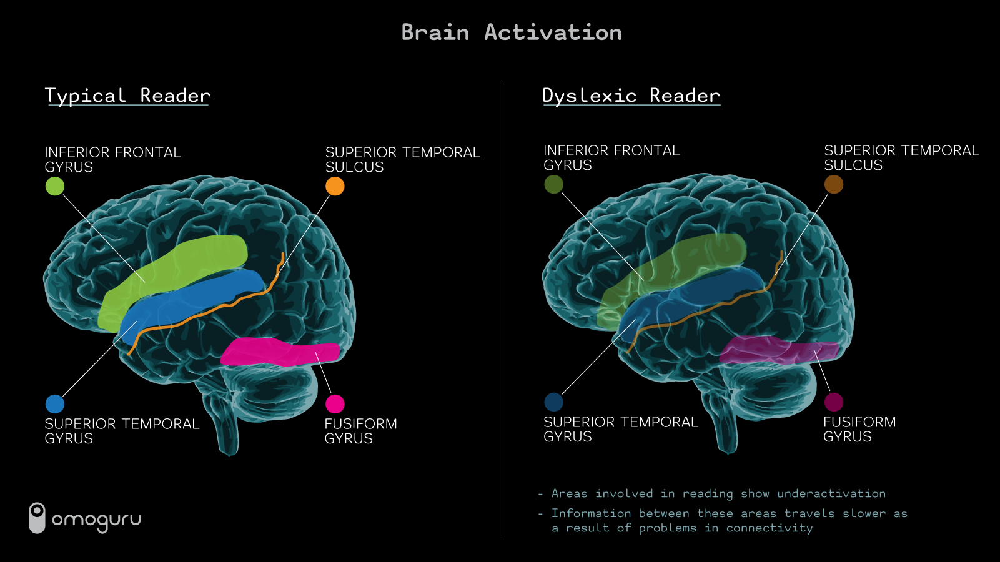
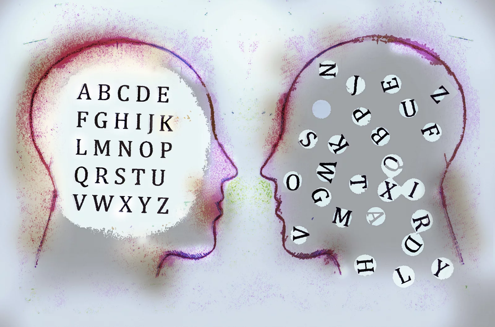

Information about Dyslexia
What is Dyslexia?
Dyslexia is a learning disorder that affects your ability to process speech and relate letters to words. This is due to the fact that dyslexia affects the part of the brain that processes language. People with Dyslexia are no less intelligent than normal people, they just learn and process the world differently. Students with Dyslexia can definitely succeed With the right learning and emotional support.
Ethiology (Causes and Prevelence/Incidence)
There's no known way to correct the underlying brain abnormality that causes dyslexia — dyslexia is a lifelong problem. However, early detection and evaluation to determine specific needs and appropriate treatment can improve success.
Here are some things you can do to prevent dyslexia
- Address the problem early. If you suspect your child has dyslexia, talk to your child's doctor.
- Read aloud to your child. It's best if you start when your child is 6 months old or even younger.
- Work with your child's school.
- Encourage reading time.
- Set an example for reading.
What are the Symptoms of Dyslexia?
Dyslexia is a very common disorder, every 5% to 10% of Americans show some symptom of dyslexia
Before School
Signs that a young child may be at risk of dyslexia include:
- Late talking
- Learning new words slowly
- Problems forming words correctly, such as reversing sounds in words or confusing words that sound alike
- Problems remembering or naming letters, numbers, and colors
- Difficulty learning nursery rhymes or playing rhyming games
School Age
Once your child is in school, dyslexia signs and symptoms may become more apparent, including:
- Reading well below the expected level for age
- Problems processing and understanding what he or she hears
- Difficulty finding the right word or forming answers to questions
- Problems remembering the sequence of things
- Difficulty seeing (and occasionally hearing) similarities and differences in letters and words
- Inability to sound out the pronunciation of an unfamiliar word
- Difficulty spelling
- Spending an unusually long time completing tasks that involve reading or writing
- Avoiding activities that involve reading
Teens and Adults:
Dyslexia signs in teens and adults are similar to those in children. Some common dyslexia signs and symptoms in teens and adults include:
- Difficulty reading, including reading aloud
- Slow and labor-intensive reading and writing
- Problems spelling
- Avoiding activities that involve reading
- Mispronouncing names or words, or problems retrieving words
- Trouble understanding jokes or expressions that have a meaning not easily understood from the specific words (idioms), such as "piece of cake" meaning "easy"
- Spending an unusually long time completing tasks that involve reading or writing
- Difficulty summarizing a story
- Trouble learning a foreign language
- Difficulty memorizing
- Difficulty doing math problems
Testing
There is no way to test for dyslexia without going to a professional doctor.
Symptoms to consider if you think you have dyslexia.
- Late talking
- Learning new words slowly
- Problems forming words correctly, such as reversing sounds in words or confusing words that sound alike
- Problems remembering or naming letters, numbers and colors
Treatment
There's no known way to correct the underlying brain abnormality that causes dyslexia — dyslexia is a lifelong problem. However, early detection and evaluation to determine specific needs and appropriate treatment can improve success.
Prognosis(Next Steps)
Next, doctors would recommend the patients on deciding on an Educational Strategy for Dyslexia, making a reading a routine. The main thing for the patients to do is not to be afraid of Dyslexia, it is not a disease think of it as a different way of learning
Diagrams + Images of Dyslexia
 
We strive to spread awareness about dyslexia and provide resources that are widely unavailable to individuals in need.
Directory
© This web app is by DYSLEXIFY